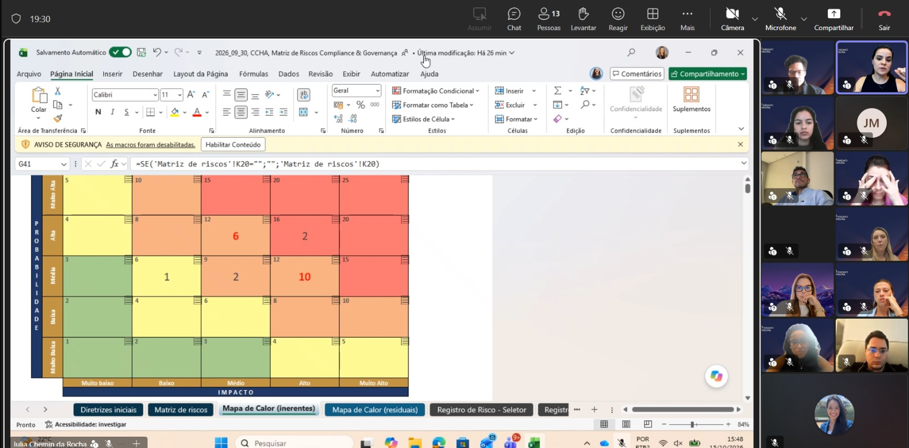
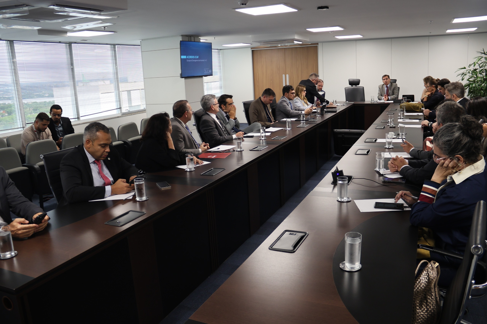

NEWSLETTER CCHA Edição nº 07 | 13 a 16 de outubro de 2026 |
|
Confira os principais encontros e iniciativas do Conselho Curador dos Honorários Advocatícios em outubro de 2026. CCHA AVANÇA NAS NOVAS ETAPAS DO PROJETO DE GOVERNANÇA, INTEGRIDADE E COMPLIANCE O Conselho Curador dos Honorários Advocatícios (CCHA) realizou, no dia 13 de outubro, uma reunião virtual com representantes do escritório Pironti+Moura para apresentação das fases 2 e 3 do projeto de aprimoramento da governança institucional. A iniciativa integra o processo de modernização administrativa e adequação às diretrizes estabelecidas pela Portaria Normativa AGU nº 192/2025. Entre os principais eixos do projeto estão o aperfeiçoamento da estrutura organizacional, a elaboração e atualização de normativos internos, a implementação de políticas de integridade e compliance e o fortalecimento dos mecanismos de gestão de riscos e controles internos. O trabalho também contempla medidas de adequação à Lei Geral de Proteção de Dados Pessoais (LGPD), com foco na segurança das informações e na proteção dos dados dos beneficiários. A Portaria nº 192/2025 estabelece diretrizes voltadas à transparência, à legalidade, à eficiência, à integridade e à prestação de contas, além de prever recomendações para o aperfeiçoamento da estrutura de governança do Conselho. Com o avanço do projeto, o CCHA reafirma seu compromisso com uma gestão cada vez mais profissionalizada, segura e alinhada às melhores práticas de governança institucional. Participantes: Júlio César Araújo Monte, Glaucia Fortaleza, Luiz Fernando Pedrosa Fontoura, Caio Alexandre Wolff e Dayvisson Martins de Oliveira, além de representantes do escritório Pironti+Moura. CCHA MANTÉM DIÁLOGO COM A SGCS/AGU SOBRE ASSUNTOS DE INTERESSE DAS CARREIRAS O Conselho Curador dos Honorários Advocatícios (CCHA) participou de mais uma reunião institucional na SGCS/AGU, no dia 14 de outubro, com a presença do Secretário de Consultoria, Flávio Roman, e representantes das associações, dando continuidade à agenda de interlocução com a Advocacia-Geral da União sobre temas de interesse dos integrantes das carreiras da advocacia pública federal. O encontro integra os esforços do Conselho para ampliar a articulação institucional, acompanhar demandas dos beneficiários e construir, de forma conjunta e fundamentada, encaminhamentos para questões que impactam as carreiras representadas pelo CCHA. A manutenção desse canal permanente de diálogo reforça o compromisso da atual gestão com a defesa dos interesses dos beneficiários, a segurança jurídica e o fortalecimento da cooperação entre o Conselho e a Advocacia-Geral da União. Participantes: todos os conselheiros participaram. CCHA DÁ CONTINUIDADE ÀS TRATATIVAS NA CÂMARA DE CONCILIAÇÃO DA AGUNo dia 14 de outubro, representantes do Conselho Curador dos Honorários Advocatícios (CCHA) participaram de mais uma reunião na Câmara de Mediação e de Conciliação da Administração Pública Federal (CCAF), realizada na sede da Advocacia-Geral da União (AGU), em Brasília. O encontro deu continuidade às tratativas no âmbito do procedimento instaurado na Câmara, após sua admissibilidade. A iniciativa integra os esforços do Conselho para avançar na construção de soluções consensuais, juridicamente seguras e sustentáveis para as questões em discussão, privilegiando o diálogo institucional e a busca de entendimentos. O CCHA reafirma seu compromisso com a condução responsável das negociações, a defesa dos interesses dos beneficiários e a busca de soluções que proporcionem segurança jurídica e estabilidade às carreiras da advocacia pública federal. Participantes pelo CCHA: Júlia Cardoso Rocha Saraiva Teixeira, Júlio César Araújo Monte, Glaucia Fortaleza, Luiz Fernando Pedrosa Fontoura, Rodolpho dos Santos Moraes, Natália Alves Duarte Barbosa, Caio Alexandre Wolff e Dayvisson Martins de Oliveira. O CCHA segue atuando para fortalecer o diálogo institucional, aperfeiçoar seus processos e ampliar as iniciativas voltadas às quatro carreiras da advocacia pública federal. |
 |